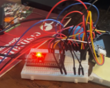

Software en Hardware
Tijdens deze workshops maakte we een IoT-schakeling bouwen voor het automatiseren van de lichtintensiteit en aarde-vochtigheid van plan (plant-systeem). Deze workshop geeft inzicht in techniek en programmeren. Zo moesten we de constructie van alle onderdelen zelf in elkaar zetten. Programmeren dat de onderdelen hun beoogde functie uitvoerde, een printplaat maken die alle verbindingen aan de juiste onderdelen geeft en daarna alles samen brengen in een product.
Wat vond ik van de workshop's?
Ik vond de lessen erg moeilijk, ik had geen achtergrond in dit gebied en stelde dan ook veel vragen aan de docent of klasgenoten. Uit eindelijk lukte het mij wel om het in elkaar te zetten van het plant systeem en het programmeren er van. Met de printplaat maken had ik iets meer moeiten. In de les lukte dit mij wel, maar thuis kwam ik helemaal vast te zitten. Ik deed deze opdracht met Roy en we hadden afgesproken dat ik het zou maken en hij zou goed keuren, dit omdat ik dit nooit eerder had gedaan en dat wel wilde proberen en Roy dit al vaker had gedaan. Helaas is dit dus niet gelukt en heeft Roy de printplaat uit eindelijk gemaakt, hier baal ik wel een beetje van. Ondanks dit heb ik wel veel geleerd in de lessen. Ik ben geen professional geworden, verre van, maar heb wel een goede indruk gekregen hoe het werkt.

- Oceanz:
Wat heb ik geleerd van deze workshop?
Voor mij als bedrijfskundige zal ik zelf deze werkzaamheden niet hoeven uit te voeren, maar het kan wel dat ik met mensen van deze afdeling samen moet werken of hun vakgebied nodig. Het is dan ook erg handig dat een beeld heb bij wat zij doen. Wanneer deze afdeling problemen heeft en zij dit bespreken is het van belang dat ik weet wat hun vakgebied in houdt om hun verder te kunnen helpen om problemen op te lossen of mee te kunnen denken. Met de kennis die ik heb opgedaan kan ik dit vakgebied beter begrijpen ik zal niet alles begrijpen maar de groten lijnen kan ik volgen waardoor het voor mij mogelijk word om mee te praten en hierdoor mijn bedrijfskundige vaardigheden ook bij dit vakgebied kan inzetten.
3D printing
Deze workshops gaven uitleg over wat bedrijven met 3D printen kunnen en hoe lessen over hoe je moet 3D printen. Tijdens deze workshop hebben we zelf een 3D ontwerp gemaakt en een bakje geprint voor het plant systeem.
Wat vond ik van de workshop's?
Ik vond de workshops op het begin erg interessant dit omdat toen voornamelijk werd besproken wat je met 3D printen kan en voor welke doel einde het uitkomsten biedt. Vervolgens gingen wij zelf aan de slag met het ontwerpen van het bakje voor het plant systeem. Dit ging mij niet goed af en heb daarom besloten de hulp van een werknemer van Limbraco in te schaken om mij te helpen. Samen met de werknemer van Limbraco heb ik de 3D tekening gemaakt, om eerlijk te zijn hij deed het werk en legde uit wat die deed en ik stelde vragen over hoezo hij bepaalde dingen zo deed. Ook hebben wij met de klas een kijkje genomen in het FABlab in Arnhem, hier kregen wij uitleg over het instellen van de 3D printer. Dit was nieuwe informatie voor mij ik dacht simpel weg dat het werkte zoals iets op je computer printen maar dit was niet het geval er kwam meer bij kijken dan ik dacht.

Van de informatie die tijdens de wokrshop's is gegeven heb ik een samenvatting gemaakt die uitlegt welke soorten 3D printen er zijn en hoe 3D printen kan worden ingezet. Ook heb ik een stukje toegevoeged over produceren met 3D printers en waarom dit nog niet in ieder bedrijf gebeurt.
Wat heb ik geleerd van deze workshop?
Ik neem de theorie zeker mee en ben van mening dat 3D printen heel veel mogelijkheden biedt voor organisaties en het op verschillende manieren kan worden ingezet. Wanneer een organisatie meerdere product ideeën heeft kan doormiddel van 3D printen de producten beter onderzocht worden welk product het beste is. Ook kan een organisatie doormiddel van 3D printen hun klanttevredenheid helpen door het sneller leveren van essentiële producten of een tijdelijke vervanger (3D print) leveren tot het gewenste product klaar is. 3D printen biedt zoveel opties op verschillende gebieden van klant tevredenheid, voorraad vermindering, werkzaamheden vergemakkelijken tot creëren van prototypes en betere voorspellingen kunnen maken. Als bedrijfskundige ben ik erg blij dat ik deze kennis heb op gedaan over 3D printen en ben ik van mening dat dit zeker van pas gaat komen.